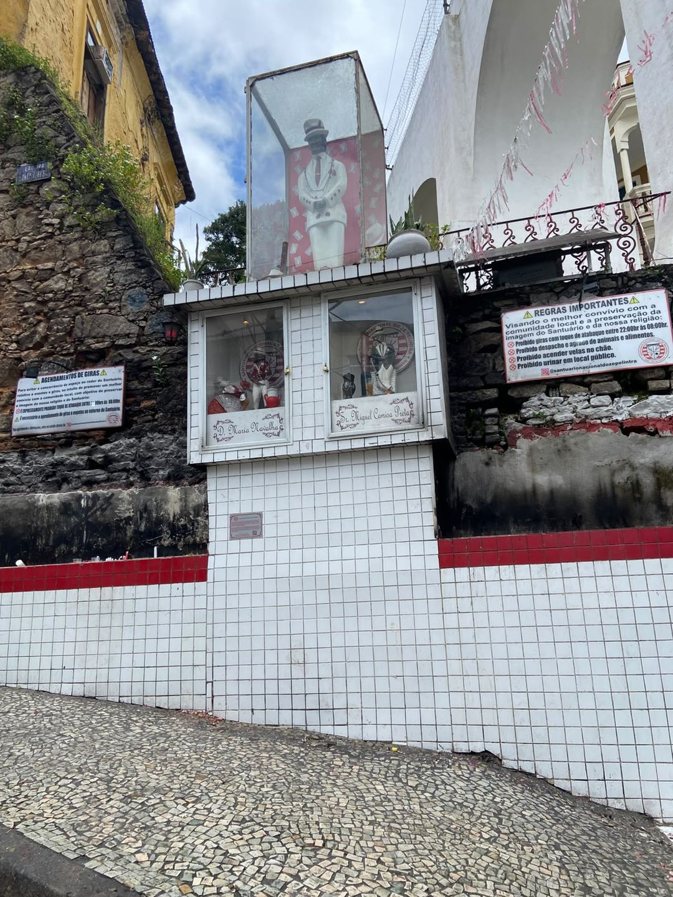

Lapa - Rio de Janeiro
A Lapa, localizada no centro do Rio de Janeiro, é um dos lugares mais conhecidos da cidade por sua boemia, sua história e sua diversidade cultural. Famosa pelos bares, rodas de samba e casas de shows, a região também carrega uma forte tradição ligada à música, à arte e à malandragem carioca.
Suas ruas, que já foram ponto de encontro de grandes nomes da música brasileira, continuam sendo palco para músicos, artistas independentes e diferentes manifestações culturais. E por aqui, o Carnaval não acontece apenas em fevereiro! Ao longo do ano, ensaios, encontros musicais e blocos fora de época mantêm vivo o espírito da folia
Entre casarões antigos, construções históricas, samba e manifestações culturais que ocupam as ruas, a Lapa reúne diferentes gerações e mantém viva uma parte importante da identidade carioca.
Pontos Turísticos
Que tal conhecer um pouco mais do Lapa a pé?
Neste passeio, vamos explorar a Rua Joaquim Silva e seus arredores, passando pela famosa Escadaria Selarón, pelos Arcos da Lapa e pelo Santuário de Zé Pilintra. Três lugares que reúnem arte, história e cultura em um só percurso.


